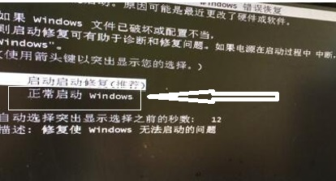
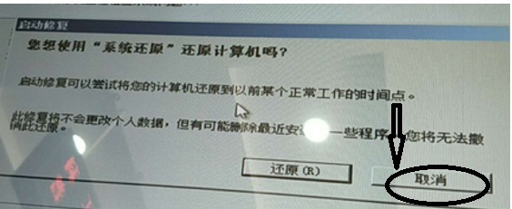
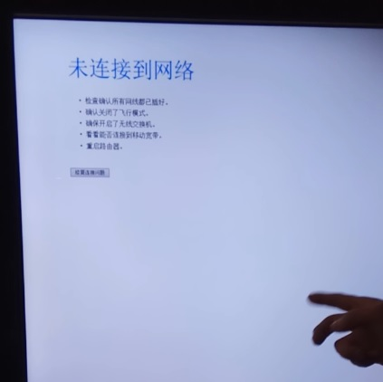
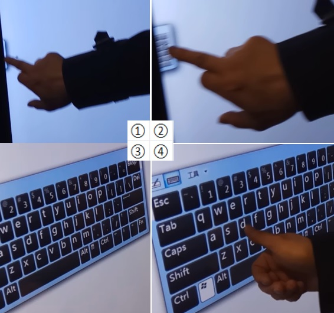
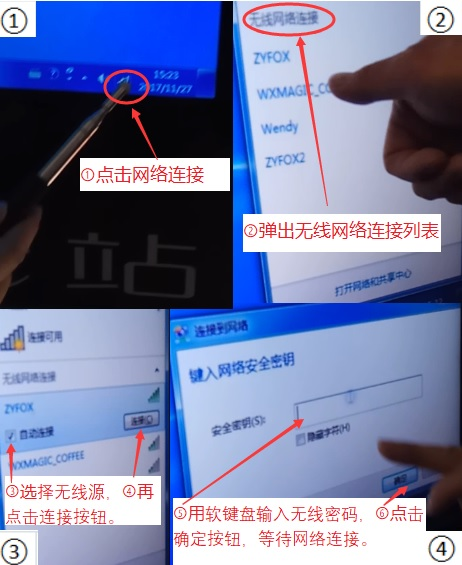

<!DOCTYPE html>
<html>
<head><meta name="generator" content="Hexo 3.8.0">
  <meta charset="utf-8">
  

  
  <title>科普e站常见故障 | Hexo</title>
  <meta name="viewport" content="width=device-width, initial-scale=1, maximum-scale=1">
  <meta name="description" content="返回首页   - 电脑开机按 F1 才能正常启动的解决方法开机按下“Del”键就可以进入CMOS的设置界面（有的电脑是f1，f2等)。进入bios以后，找到 boot setting configuration选项按enter，找到“Wait For ‘F1’ lf ERROR”,-按enter，用键盘方向键↓↑选“Disabled”，f10保存。这样，就关闭了f1提示科普e站开机自动启动还原界">
<meta property="og:type" content="article">
<meta property="og:title" content="科普e站常见故障">
<meta property="og:url" content="https://github.com/linuxpy/github.io/2019/01/09/电脑常见故障/index.html">
<meta property="og:site_name" content="Hexo">
<meta property="og:description" content="返回首页   - 电脑开机按 F1 才能正常启动的解决方法开机按下“Del”键就可以进入CMOS的设置界面（有的电脑是f1，f2等)。进入bios以后，找到 boot setting configuration选项按enter，找到“Wait For ‘F1’ lf ERROR”,-按enter，用键盘方向键↓↑选“Disabled”，f10保存。这样，就关闭了f1提示科普e站开机自动启动还原界">
<meta property="og:locale" content="default">
<meta property="og:image" content="https://github.com/linuxpy/github.io/2019/01/09/电脑常见故障/2.jpg">
<meta property="og:image" content="https://github.com/linuxpy/github.io/2019/01/09/电脑常见故障/1.jpg">
<meta property="og:image" content="https://github.com/linuxpy/github.io/2019/01/09/电脑常见故障/9_.jpg">
<meta property="og:image" content="https://github.com/linuxpy/github.io/2019/01/09/电脑常见故障/13_1.jpg">
<meta property="og:image" content="https://github.com/linuxpy/github.io/2019/01/09/电脑常见故障/ez005_.jpg">
<meta property="og:updated_time" content="2019-01-26T14:13:42.773Z">
<meta name="twitter:card" content="summary">
<meta name="twitter:title" content="科普e站常见故障">
<meta name="twitter:description" content="返回首页   - 电脑开机按 F1 才能正常启动的解决方法开机按下“Del”键就可以进入CMOS的设置界面（有的电脑是f1，f2等)。进入bios以后，找到 boot setting configuration选项按enter，找到“Wait For ‘F1’ lf ERROR”,-按enter，用键盘方向键↓↑选“Disabled”，f10保存。这样，就关闭了f1提示科普e站开机自动启动还原界">
<meta name="twitter:image" content="https://github.com/linuxpy/github.io/2019/01/09/电脑常见故障/2.jpg">
  
    <link rel="alternate" href="/github.io/atom.xml" title="Hexo" type="application/atom+xml">
  
  
    <link rel="icon" href="/favicon.png">
  
  
    <link href="//fonts.googleapis.com/css?family=Source+Code+Pro" rel="stylesheet" type="text/css">
  
  <link rel="stylesheet" href="/github.io/css/style.css">
</head>
</html>
<body>
  <div id="container">
    <div id="wrap">
      <header id="header">
  <div id="banner"></div>
  <div id="header-outer" class="outer">
    <div id="header-title" class="inner">
      <h1 id="logo-wrap">
        <a href="/github.io/" id="logo">Hexo</a>
      </h1>
      
    </div>
    <div id="header-inner" class="inner">
      <nav id="main-nav">
        <a id="main-nav-toggle" class="nav-icon"></a>
        
          <a class="main-nav-link" href="/github.io/">Home</a>
        
          <a class="main-nav-link" href="/github.io/archives">Archives</a>
        
      </nav>
      <nav id="sub-nav">
        
          <a id="nav-rss-link" class="nav-icon" href="/github.io/atom.xml" title="RSS Feed"></a>
        
        <a id="nav-search-btn" class="nav-icon" title="Search"></a>
      </nav>
      <div id="search-form-wrap">
        <form action="//google.com/search" method="get" accept-charset="UTF-8" class="search-form"><input type="search" name="q" class="search-form-input" placeholder="Search"><button type="submit" class="search-form-submit">&#xF002;</button><input type="hidden" name="sitesearch" value="https://github.com/linuxpy/github.io"></form>
      </div>
    </div>
  </div>
</header>
      <div class="outer">
        <section id="main"><article id="post-电脑常见故障" class="article article-type-post" itemscope="" itemprop="blogPost">
  <div class="article-meta">
    <a href="/github.io/2019/01/09/电脑常见故障/" class="article-date">
  <time datetime="2019-01-09T09:05:24.000Z" itemprop="datePublished">2019-01-09</time>
</a>
    
  </div>
  <div class="article-inner">
    
    
      <header class="article-header">
        
  
    <h1 class="article-title" itemprop="name">
      科普e站常见故障
    </h1>
  

      </header>
    
    <div class="article-entry" itemprop="articleBody">
      
        <blockquote>
<p><a href="https://linuxpy.github.io/github.io/2019/01/12/%E7%A7%91%E6%99%AEe%E7%AB%99%E4%BB%8B%E7%BB%8D%E7%9B%AE%E5%BD%95/" target="_blank" rel="noopener">返回首页</a></p>
</blockquote>
<hr>
<h2 id="电脑开机按-F1-才能正常启动的解决方法"><a href="#电脑开机按-F1-才能正常启动的解决方法" class="headerlink" title="- 电脑开机按 F1 才能正常启动的解决方法"></a>- 电脑开机按 F1 才能正常启动的解决方法</h2><h3 id="开机按下“Del”键就可以进入CMOS的设置界面（有的电脑是f1，f2等-。"><a href="#开机按下“Del”键就可以进入CMOS的设置界面（有的电脑是f1，f2等-。" class="headerlink" title="开机按下“Del”键就可以进入CMOS的设置界面（有的电脑是f1，f2等)。"></a>开机按下“Del”键就可以进入CMOS的设置界面（有的电脑是f1，f2等)。</h3><h3 id="进入bios以后，找到-boot-setting-configuration选项按enter，"><a href="#进入bios以后，找到-boot-setting-configuration选项按enter，" class="headerlink" title="进入bios以后，找到 boot setting configuration选项按enter，"></a>进入bios以后，找到 boot setting configuration选项按enter，</h3><h3 id="找到“Wait-For-‘F1’-lf-ERROR”-按enter，用键盘方向键↓↑选“Disabled”，f10保存。这样，就关闭了f1提示"><a href="#找到“Wait-For-‘F1’-lf-ERROR”-按enter，用键盘方向键↓↑选“Disabled”，f10保存。这样，就关闭了f1提示" class="headerlink" title="找到“Wait For ‘F1’ lf ERROR”,-按enter，用键盘方向键↓↑选“Disabled”，f10保存。这样，就关闭了f1提示"></a>找到“Wait For ‘F1’ lf ERROR”,-按enter，用键盘方向键↓↑选“Disabled”，f10保存。这样，就关闭了f1提示</h3><h2 id="科普e站开机自动启动还原界面的解决方法"><a href="#科普e站开机自动启动还原界面的解决方法" class="headerlink" title="科普e站开机自动启动还原界面的解决方法"></a>科普e站开机自动启动还原界面的解决方法</h2><p></p>
<h3 id="解决方法：接入USB键盘，重新启动科普e站系统，选中“正常启动windows”或“取消还原”，再按回车键即可正常启动系统（见上图）-故障原因是这是科普e站非正常关机（直接切断电源）导致。"><a href="#解决方法：接入USB键盘，重新启动科普e站系统，选中“正常启动windows”或“取消还原”，再按回车键即可正常启动系统（见上图）-故障原因是这是科普e站非正常关机（直接切断电源）导致。" class="headerlink" title="解决方法：接入USB键盘，重新启动科普e站系统，选中“正常启动windows”或“取消还原”，再按回车键即可正常启动系统（见上图）;故障原因是这是科普e站非正常关机（直接切断电源）导致。"></a>解决方法：接入USB键盘，重新启动科普e站系统，选中“正常启动windows”或“取消还原”，再按回车键即可正常启动系统（见上图）;故障原因是这是科普e站非正常关机（直接切断电源）导致。</h3><h2 id="未连接到网络的解决方法"><a href="#未连接到网络的解决方法" class="headerlink" title="未连接到网络的解决方法 "></a>未连接到网络的解决方法 </h2><h3 id="当出现以上问题时（见上图），先检查内外网络是否正常，如果有（有线）网络，就使用有线网络，如果没有（有线）网络，需要通过软键盘配置无线网络连接（只在初次使用时配置），见下图。-配置无线网络连接（只在初次使用时配置）-先调出软键盘用win-d键退出到win7操作系统-桌面-，再按上图顺序提示操作：①点击网络连接，②弹出无线网络列表，③选择无线源，④再点击连接按钮。⑤用软键盘输入无线密码，⑥点击确定按钮，等待网络连接。"><a href="#当出现以上问题时（见上图），先检查内外网络是否正常，如果有（有线）网络，就使用有线网络，如果没有（有线）网络，需要通过软键盘配置无线网络连接（只在初次使用时配置），见下图。-配置无线网络连接（只在初次使用时配置）-先调出软键盘用win-d键退出到win7操作系统-桌面-，再按上图顺序提示操作：①点击网络连接，②弹出无线网络列表，③选择无线源，④再点击连接按钮。⑤用软键盘输入无线密码，⑥点击确定按钮，等待网络连接。" class="headerlink" title="当出现以上问题时（见上图），先检查内外网络是否正常，如果有（有线）网络，就使用有线网络，如果没有（有线）网络，需要通过软键盘配置无线网络连接（只在初次使用时配置），见下图。 配置无线网络连接（只在初次使用时配置）, 先调出软键盘用win+d键退出到win7操作系统(桌面)，再按上图顺序提示操作：①点击网络连接，②弹出无线网络列表，③选择无线源，④再点击连接按钮。⑤用软键盘输入无线密码，⑥点击确定按钮，等待网络连接。"></a>当出现以上问题时（见上图），先检查内外网络是否正常，如果有（有线）网络，就使用有线网络，如果没有（有线）网络，需要通过软键盘配置无线网络连接（只在初次使用时配置），见下图。 配置无线网络连接（只在初次使用时配置）, 先调出软键盘用win+d键退出到win7操作系统(桌面)，再按上图顺序提示操作：①点击网络连接，②弹出无线网络列表，③选择无线源，④再点击连接按钮。⑤用软键盘输入无线密码，⑥点击确定按钮，等待网络连接。</h3><h2 id="电脑常见死机故障"><a href="#电脑常见死机故障" class="headerlink" title="- 电脑常见死机故障"></a>- 电脑常见死机故障</h2><h3 id="造成死机的硬件故障最常见就是：CPU散热器出问题，CPU过热所致。"><a href="#造成死机的硬件故障最常见就是：CPU散热器出问题，CPU过热所致。" class="headerlink" title="造成死机的硬件故障最常见就是：CPU散热器出问题，CPU过热所致。"></a>造成死机的硬件故障最常见就是：CPU散热器出问题，CPU过热所致。</h3><h3 id="解决方案：更换CPU散热器。"><a href="#解决方案：更换CPU散热器。" class="headerlink" title="解决方案：更换CPU散热器。"></a>解决方案：更换CPU散热器。</h3><h3 id="其它造成死机的常见硬件故障：显卡、电源散热器出问题，过热所致。"><a href="#其它造成死机的常见硬件故障：显卡、电源散热器出问题，过热所致。" class="headerlink" title="其它造成死机的常见硬件故障：显卡、电源散热器出问题，过热所致。"></a>其它造成死机的常见硬件故障：显卡、电源散热器出问题，过热所致。</h3><h3 id="解决方案：显卡问题可以直接更换显卡风扇。"><a href="#解决方案：显卡问题可以直接更换显卡风扇。" class="headerlink" title="解决方案：显卡问题可以直接更换显卡风扇。"></a>解决方案：显卡问题可以直接更换显卡风扇。</h3><h2 id="电脑常见重启故障"><a href="#电脑常见重启故障" class="headerlink" title="- 电脑常见重启故障"></a>- 电脑常见重启故障</h2><h3 id="造成重启的最常见原因是：CPU风扇转速过低或WIN7系统损坏，系统检测到CPU风扇转速低于某一数值，或是CPU温度超过某一度数，电脑自动重启或WIN7系统损坏。"><a href="#造成重启的最常见原因是：CPU风扇转速过低或WIN7系统损坏，系统检测到CPU风扇转速低于某一数值，或是CPU温度超过某一度数，电脑自动重启或WIN7系统损坏。" class="headerlink" title="造成重启的最常见原因是：CPU风扇转速过低或WIN7系统损坏，系统检测到CPU风扇转速低于某一数值，或是CPU温度超过某一度数，电脑自动重启或WIN7系统损坏。"></a>造成重启的最常见原因是：CPU风扇转速过低或WIN7系统损坏，系统检测到CPU风扇转速低于某一数值，或是CPU温度超过某一度数，电脑自动重启或WIN7系统损坏。</h3><h3 id="解决方案：更换CPU散热器或重新安装WIN7系统。"><a href="#解决方案：更换CPU散热器或重新安装WIN7系统。" class="headerlink" title="解决方案：更换CPU散热器或重新安装WIN7系统。"></a>解决方案：更换CPU散热器或重新安装WIN7系统。</h3><h2 id="电脑常见开机无响应故障"><a href="#电脑常见开机无响应故障" class="headerlink" title="- 电脑常见开机无响应故障"></a>- 电脑常见开机无响应故障</h2><h3 id="电脑开机没反应最常见的有：电脑主机电源线没接好、显示器开关没打开、显示器电源或显示器数据线接触不良。当电脑指示灯亮，电脑内部CPU风扇正常转，一般来说可以初步的判断为电源没什么大问题，我们再去检查下显示器，看下显示器电源指示灯是否亮着，显示器数据线是否连接良好。如果主机没什么问题，电脑键盘指示灯与鼠标指示灯都是正常亮着的，这种情况问题往往出现在显示器上，如显示器开关没打开，显示器数据线没接好，或者显示器电源有故障等。"><a href="#电脑开机没反应最常见的有：电脑主机电源线没接好、显示器开关没打开、显示器电源或显示器数据线接触不良。当电脑指示灯亮，电脑内部CPU风扇正常转，一般来说可以初步的判断为电源没什么大问题，我们再去检查下显示器，看下显示器电源指示灯是否亮着，显示器数据线是否连接良好。如果主机没什么问题，电脑键盘指示灯与鼠标指示灯都是正常亮着的，这种情况问题往往出现在显示器上，如显示器开关没打开，显示器数据线没接好，或者显示器电源有故障等。" class="headerlink" title="电脑开机没反应最常见的有：电脑主机电源线没接好、显示器开关没打开、显示器电源或显示器数据线接触不良。当电脑指示灯亮，电脑内部CPU风扇正常转，一般来说可以初步的判断为电源没什么大问题，我们再去检查下显示器，看下显示器电源指示灯是否亮着，显示器数据线是否连接良好。如果主机没什么问题，电脑键盘指示灯与鼠标指示灯都是正常亮着的，这种情况问题往往出现在显示器上，如显示器开关没打开，显示器数据线没接好，或者显示器电源有故障等。"></a>电脑开机没反应最常见的有：电脑主机电源线没接好、显示器开关没打开、显示器电源或显示器数据线接触不良。当电脑指示灯亮，电脑内部CPU风扇正常转，一般来说可以初步的判断为电源没什么大问题，我们再去检查下显示器，看下显示器电源指示灯是否亮着，显示器数据线是否连接良好。如果主机没什么问题，电脑键盘指示灯与鼠标指示灯都是正常亮着的，这种情况问题往往出现在显示器上，如显示器开关没打开，显示器数据线没接好，或者显示器电源有故障等。</h3><h2 id="电脑开机无显示故障的排除方法-无报警声"><a href="#电脑开机无显示故障的排除方法-无报警声" class="headerlink" title="- 电脑开机无显示故障的排除方法(无报警声)"></a>- 电脑开机无显示故障的排除方法(无报警声)</h2><h3 id="1、首先检查电脑的外部接线是否接好，把各个连线重新插一遍，看故障是否排除。"><a href="#1、首先检查电脑的外部接线是否接好，把各个连线重新插一遍，看故障是否排除。" class="headerlink" title="1、首先检查电脑的外部接线是否接好，把各个连线重新插一遍，看故障是否排除。"></a>1、首先检查电脑的外部接线是否接好，把各个连线重新插一遍，看故障是否排除。</h3><h3 id="2、如果故障依旧，接着清理主板上的灰尘，然后检查电脑是否正常。"><a href="#2、如果故障依旧，接着清理主板上的灰尘，然后检查电脑是否正常。" class="headerlink" title="2、如果故障依旧，接着清理主板上的灰尘，然后检查电脑是否正常。"></a>2、如果故障依旧，接着清理主板上的灰尘，然后检查电脑是否正常。</h3><h3 id="3、如果故障依旧，接着将BIOS放电，或拔掉主板上的Reset线及其他开关、指示灯连线，然后用改锥短路开关，看能否能开机。"><a href="#3、如果故障依旧，接着将BIOS放电，或拔掉主板上的Reset线及其他开关、指示灯连线，然后用改锥短路开关，看能否能开机。" class="headerlink" title="3、如果故障依旧，接着将BIOS放电，或拔掉主板上的Reset线及其他开关、指示灯连线，然后用改锥短路开关，看能否能开机。"></a>3、如果故障依旧，接着将BIOS放电，或拔掉主板上的Reset线及其他开关、指示灯连线，然后用改锥短路开关，看能否能开机。</h3><h3 id="4、如果不能开机，将硬盘、软驱、光驱的数据线拔掉，然后检查电脑是否能开机，如果电脑显示器出现开机画面，则说明问题在这几个设备中。"><a href="#4、如果不能开机，将硬盘、软驱、光驱的数据线拔掉，然后检查电脑是否能开机，如果电脑显示器出现开机画面，则说明问题在这几个设备中。" class="headerlink" title="4、如果不能开机，将硬盘、软驱、光驱的数据线拔掉，然后检查电脑是否能开机，如果电脑显示器出现开机画面，则说明问题在这几个设备中。"></a>4、如果不能开机，将硬盘、软驱、光驱的数据线拔掉，然后检查电脑是否能开机，如果电脑显示器出现开机画面，则说明问题在这几个设备中。</h3><h3 id="5、如果故障依旧，则故障可能由内存、显卡、CPU、主板等设备引起。接着使用插拔法、交换法等方法分别检查内存、显卡、CPU等设备是否正常，如果有损坏的设备，更换损坏的设备。"><a href="#5、如果故障依旧，则故障可能由内存、显卡、CPU、主板等设备引起。接着使用插拔法、交换法等方法分别检查内存、显卡、CPU等设备是否正常，如果有损坏的设备，更换损坏的设备。" class="headerlink" title="5、如果故障依旧，则故障可能由内存、显卡、CPU、主板等设备引起。接着使用插拔法、交换法等方法分别检查内存、显卡、CPU等设备是否正常，如果有损坏的设备，更换损坏的设备。"></a>5、如果故障依旧，则故障可能由内存、显卡、CPU、主板等设备引起。接着使用插拔法、交换法等方法分别检查内存、显卡、CPU等设备是否正常，如果有损坏的设备，更换损坏的设备。</h3><h2 id="电脑开机无显示但有报警声，可以根据BIOS报警声的含义，来检查出现故障的设备，以排除故障。"><a href="#电脑开机无显示但有报警声，可以根据BIOS报警声的含义，来检查出现故障的设备，以排除故障。" class="headerlink" title="- 电脑开机无显示但有报警声，可以根据BIOS报警声的含义，来检查出现故障的设备，以排除故障。"></a>- 电脑开机无显示但有报警声，可以根据BIOS报警声的含义，来检查出现故障的设备，以排除故障。</h2><h3 id="1短-系统正常"><a href="#1短-系统正常" class="headerlink" title="1短 系统正常"></a>1短 系统正常</h3><h3 id="2短-常规错误，请进入CMOS-SETUP重新设置不正确的选项"><a href="#2短-常规错误，请进入CMOS-SETUP重新设置不正确的选项" class="headerlink" title="2短 常规错误，请进入CMOS SETUP重新设置不正确的选项"></a>2短 常规错误，请进入CMOS SETUP重新设置不正确的选项</h3><h3 id="1长1短-RAM或主板出错"><a href="#1长1短-RAM或主板出错" class="headerlink" title="1长1短 RAM或主板出错"></a>1长1短 RAM或主板出错</h3><h3 id="1长2短-显卡错误———————–常见"><a href="#1长2短-显卡错误———————–常见" class="headerlink" title="1长2短 显卡错误———————–常见"></a>1长2短 显卡错误———————–常见</h3><h3 id="1长3短-键盘控制器错误"><a href="#1长3短-键盘控制器错误" class="headerlink" title="1长3短 键盘控制器错误"></a>1长3短 键盘控制器错误</h3><h3 id="1长9短-BIOS损坏"><a href="#1长9短-BIOS损坏" class="headerlink" title="1长9短 BIOS损坏"></a>1长9短 BIOS损坏</h3><h3 id="不断地响-长声-内存插不稳或损坏——-常见"><a href="#不断地响-长声-内存插不稳或损坏——-常见" class="headerlink" title="不断地响(长声) 内存插不稳或损坏——-常见"></a>不断地响(长声) 内存插不稳或损坏——-常见</h3><h3 id="不停地响-电源-显示器未和显示卡连接好"><a href="#不停地响-电源-显示器未和显示卡连接好" class="headerlink" title="不停地响 电源,显示器未和显示卡连接好"></a>不停地响 电源,显示器未和显示卡连接好</h3><h3 id="重复短响-电源"><a href="#重复短响-电源" class="headerlink" title="重复短响 电源"></a>重复短响 电源</h3><hr>
<blockquote>
<p><a href="https://linuxpy.github.io/github.io/2019/01/12/%E7%A7%91%E6%99%AEe%E7%AB%99%E4%BB%8B%E7%BB%8D%E7%9B%AE%E5%BD%95/" target="_blank" rel="noopener">返回首页</a></p>
</blockquote>

      
    </div>
    <footer class="article-footer">
      <a data-url="https://github.com/linuxpy/github.io/2019/01/09/电脑常见故障/" data-id="ck4gg4kwb0005bgmgd7zyeu3d" class="article-share-link">Share</a>
      
      
    </footer>
  </div>
  
    
<nav id="article-nav">
  
    <a href="/github.io/2019/01/11/科普e站后台发布简要说明/" id="article-nav-newer" class="article-nav-link-wrap">
      <strong class="article-nav-caption">Newer</strong>
      <div class="article-nav-title">
        
          科普e站后台发布简要说明
        
      </div>
    </a>
  
  
    <a href="/github.io/2019/01/09/科普e站设备的使用维护及注意事项/" id="article-nav-older" class="article-nav-link-wrap">
      <strong class="article-nav-caption">Older</strong>
      <div class="article-nav-title">科普e站设备的使用维护及注意事项</div>
    </a>
  
</nav>

  
</article>

</section>
        
          <aside id="sidebar">
  
    

  
    

  
    
  
    
  <div class="widget-wrap">
    <h3 class="widget-title">Archives</h3>
    <div class="widget">
      <ul class="archive-list"><li class="archive-list-item"><a class="archive-list-link" href="/github.io/archives/2019/02/">February 2019</a></li><li class="archive-list-item"><a class="archive-list-link" href="/github.io/archives/2019/01/">January 2019</a></li></ul>
    </div>
  </div>


  
    
  <div class="widget-wrap">
    <h3 class="widget-title">Recent Posts</h3>
    <div class="widget">
      <ul>
        
          <li>
            <a href="/github.io/2019/02/04/pdf/">pdf</a>
          </li>
        
          <li>
            <a href="/github.io/2019/01/21/zhou/">zhou</a>
          </li>
        
          <li>
            <a href="/github.io/2019/01/20/work/">工作笔记</a>
          </li>
        
          <li>
            <a href="/github.io/2019/01/16/mydoc/">文档</a>
          </li>
        
          <li>
            <a href="/github.io/2019/01/12/科普e站设备安装使用操作说明/">(no title)</a>
          </li>
        
      </ul>
    </div>
  </div>

  
</aside>
        
      </div>
      <footer id="footer">
  
  <div class="outer">
    <div id="footer-info" class="inner">
      &copy; 2019 John Doe<br>
      Powered by <a href="http://hexo.io/" target="_blank">Hexo</a>
    </div>
  </div>
</footer>
    </div>
    <nav id="mobile-nav">
  
    <a href="/github.io/" class="mobile-nav-link">Home</a>
  
    <a href="/github.io/archives" class="mobile-nav-link">Archives</a>
  
</nav>
    

<script src="//ajax.googleapis.com/ajax/libs/jquery/2.0.3/jquery.min.js"></script>


  <link rel="stylesheet" href="/github.io/fancybox/jquery.fancybox.css">
  <script src="/github.io/fancybox/jquery.fancybox.pack.js"></script>


<script src="/github.io/js/script.js"></script>


  </div>
</body>
</html>